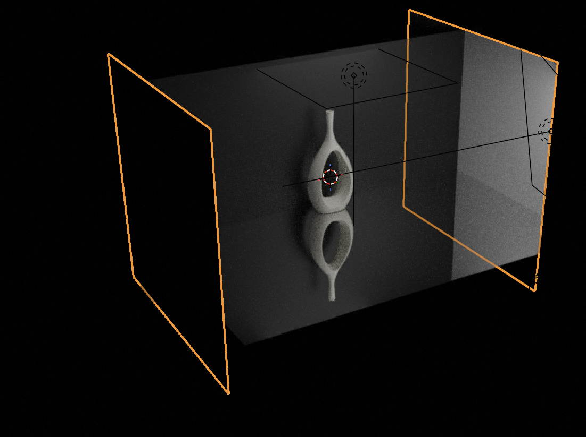
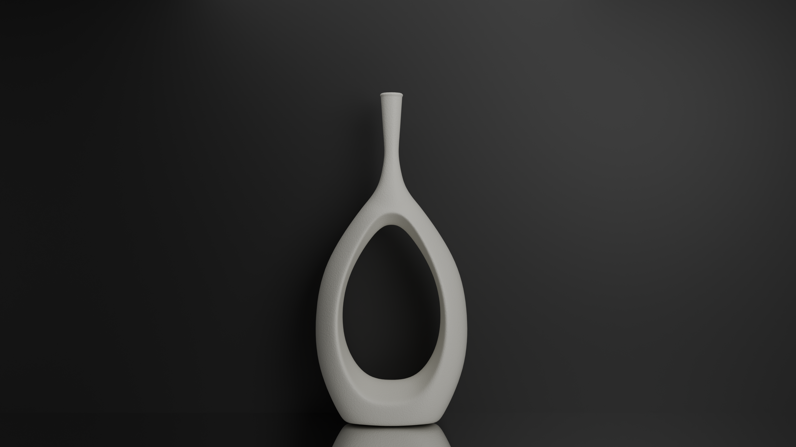

The final step was setting up a lighting rig (figure 11) and rendering the image (i.e. take a picture). To do this, I created some plane objetcs and gave them all special materials: the back wall had a basic black material, the floor was a mirror material, and the side walls which are off screen both had a bright white material to help concentrate the light from the spot lights above and in front of the vase (both out of frame).

Thank you for tuning into my guide! I hope you learned a lot and have more curiousity about the world of 3D CGI. Here's the final rendered image:
